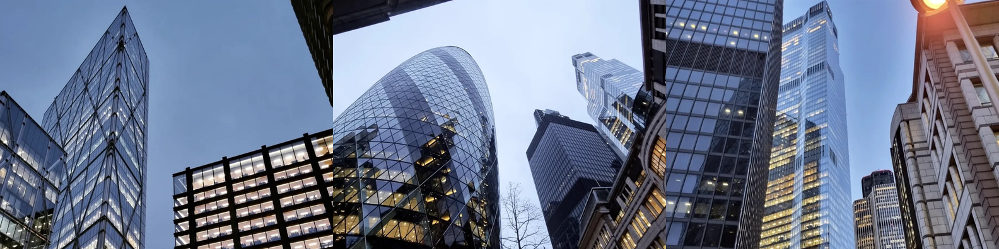
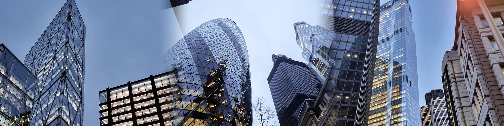

Ehimwenma Usoh
Visual Evaluation & AI-Assisted Design
A documented case study in visual quality review, image composition, iterative feedback, and evaluating AI-assisted creative outputs.
Project: LinkedIn banner optimisation
My goal was to improve the visual presentation of my professional LinkedIn profile using selected London architecture photographs. I directed an AI agent, specified the visual references, reviewed successive banner exports, and requested corrections when the results did not meet my requirements.
Before and after
Correct proportions, visible joins

1584 × 396 pixels · 4:1 aspect ratio · agent-produced collage from selected images.
The first collage preserved the photos' proportions without stretching. However, the boundaries between panels were obvious, and I wanted a larger, sharper-looking export.
Softer transitions, remaining limitations

4752 × 1188 pixels · 4:1 aspect ratio · revised agent-produced export.
I requested a larger export and softer transitions. The blended joins reduced the appearance of hard dividers, although some overlapping detail remained visible. Increasing pixel dimensions did not restore detail absent from the source screenshots.
My evaluation method
Confirm that the output uses the images I selected, rather than unrelated generated or sourced scenery.
Check the required 4:1 banner ratio and ensure images are fitted without visible stretching.
Inspect panel seams, transitions, cropping, overlap, and overall composition.
Describe specific defects, request targeted revisions, and distinguish genuine detail improvements from upscaling.
What I learned
My early instructions left too much room for interpretation. I improved the workflow by specifying the exact source images, output dimensions, and visual issues that needed correction. For future work, I would start with original high-resolution photos, agree on collage-versus-blend treatment upfront, and review a preview before publication.
Scope note: This is a personal, AI-assisted visual evaluation case study. It demonstrates my review and direction of creative outputs; it is not presented as a commissioned brand identity system, paid advertising campaign, or proof of ongoing professional brand-design employment.